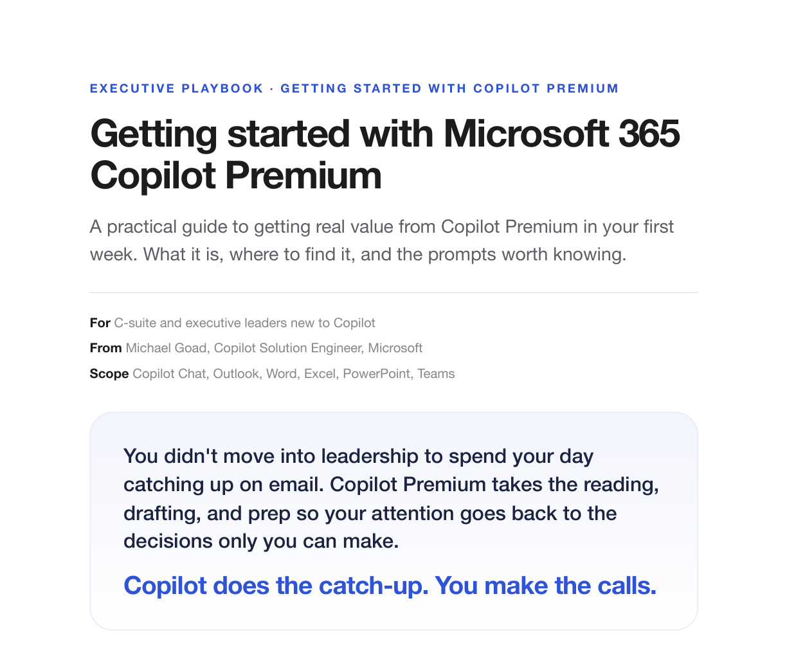

Copilot does the catch-up. You make the calls.
A plain-language program for a leader who is brand new to Copilot. It walks your executives from their first prompt to their own chief-of-staff agent, in three tiers of short sessions, so they get back to the calls only they can make.

Premium works from your actual work, not the public web.
Copilot Premium works inside the apps you already use, more like a chief of staff than a chatbot. Here is what a leader gets, and why each part matters.
It knows your work
Ask about a thread, a customer, a project, or a document by name and Copilot reads across your Microsoft 365 content to answer.
It works where you work
Built into Outlook, Word, Excel, PowerPoint, Teams, and a single Copilot Chat front door. No new tool to learn.
It sounds like you
Set it up once and it drafts in your voice and remembers your priorities, so less of what it produces needs a rewrite.
It stays private
Your prompts and data stay inside your tenant under enterprise protection. It is not used to train the models.
Three tiers. Each one builds on the last.
Start at the bottom. Every tier is useful on its own, and each adds more leverage than the last. Every session is 30 or 60 minutes and stands alone. Run one a week, block a half-day per tier, or do Tier 1 in a morning.
Find it, trust it, make it yours
Find it, trust it, give it a clear job, and put it to work. The core every leader should do.
Agents that do the heavy thinking
The premium reasoning agents that research and analyze, the work that used to take an analyst a week.
A Copilot that comes to you
Give Copilot a standing job as an agent that protects your time and thinks at your altitude.
See exactly what each session covers.
Pick a tier, then expand any session to see what actually gets covered inside it, from the Copilot app tour to setting up custom instructions. This is the syllabus a leader or champion can skim before booking the room.
Use Copilot, and prompt like you mean it. This tier alone gets your time back.
1.1Meet Copilot, Find It, and Make It Yours60 min+
"One hour: find it, trust it, and make it sound like you."
- Is my data safe: the tenant boundary, why your prompts are not used to train models, permission-trimmed answers, and the Purview audit trail
- Where to find Copilot: the app tour across the Copilot front door, the Office ribbon, Teams meetings, mobile, and using it by voice
- Make it sound like you: setting up personalization and custom instructions, plus turning on Memory so you stop repeating yourself
1.2Prompt Like You Mean It: Your First Win and a Second Set of Eyes60 min+
"Better prompts beat better tools. Give it one job, then have it tell you what you're missing."
- The four-part prompt formula: goal, context, source, and format, and the difference between a weak ask and a useful answer
- Your first 5-minute win: ready prompts to catch up on a thread, clear the inbox, and walk into a meeting prepared
- A second set of eyes: power-user lenses like Contextual Filter, Devil's Advocate, and Voice Distiller
1.3By App: Where the Time Comes Back60 min+
"Same assistant, tuned to whatever's in front of you."
- Outlook: inbox triage, long-thread summaries, drafting in your tone, and meeting prep
- Word: drafting from your own files, rewriting for an audience, and the one-page board summary
- Excel: plain-English analysis, trend spotting, and Agent Mode
- PowerPoint: turning a document into a first-draft deck and cleaning up cluttered slides
- Teams and Copilot Chat: meeting recaps, decisions and owners, audio overviews, and reasoning across all your work
1.4Put It on a Schedule: Your Morning Brief30 min+
"Stop asking for the update. Have it come to you."
- Scheduled prompts: the first chief-of-staff move, setting up a weekday brief that lands before you open your laptop, so you get the summary, not the search
Agents that do the heavy thinking. Purpose-built reasoning agents that research and analyze.
2.1Premium Reasoning Agents: Researcher + Analyst60 min+
"Point Researcher at a decision and Analyst at your numbers, and walk in with the thinking already done."
- Researcher: deep, multi-step, cited research across your work and the open web, built for strategy, not quick lookups
- Analyst: reasoning over raw spreadsheets, writing and running its own analysis code, and returning trends, tables, and visuals
- Put them together: one cited briefing and a recommendation you could act on, on a real decision
2.2Copilot Notebooks: One Place for a Big Topic30 minOptional+
"Gather it once, ask across all of it, then listen to it like a podcast."
- A grounded workspace: gather the documents, notes, and recaps for one topic, ask across all of them at once, and generate an audio overview to catch up hands-free
Build a Copilot that comes to you. This is the chief-of-staff move.
3.1Build Your Chief of Staff Agent60 min+
"If you're typing the same prompt twice a week, that's an agent waiting to happen."
- Your first agent: give Copilot a standing job that thinks at your altitude and sounds like you, built in about 15 minutes from two Word templates, then shared with your team
3.2More Agents Worth Building30 min+
"Build it once, and your whole team inherits it."
- Three to build and share: BossBuddy for strategy, Taskmaster for tracking what needs attention, and Impact Check for seeing your influence, plus saving reusable prompts in the Prompt Gallery
3.3For Your Executive Assistant: Own the Daily Prep30 minOptional+
"Copilot multiplies a great assistant, it doesn't replace one. You get the summary, not the search."
- Executive and assistant together: share your personalization profile so their output sounds like you, then hand off the daily inbox triage, briefings, meeting follow-ups, and drafting in a voice you have agreed on
Same framework, three speeds. You decide who carries it.
You do not have to choose between "Microsoft runs everything" and "you are on your own." The program is modular, and every asset is yours to download. Pick the model that fits how much time your leaders can commit and how much you want to own.
Microsoft-led
Microsoft facilitates the full tiered program with your leaders, session by session. You bring the room, we run it.
We start, you scale
Microsoft runs the foundation live and delivers tailored one-on-one training, then hands you the deck and trains your trainers so your team owns delivery.
Partner-led
A Microsoft partner delivers and customizes the full program alongside you and Microsoft. A dedicated team owns rollout, tailoring, and adoption end to end.
Whichever model you pick, you own the framework. Microsoft gets you started, hands you the deck and every asset, and trains your team to run it. This becomes your program, and your leaders see you deliver it.
Trust it faster by knowing exactly where the line is.
Honest expectations prevent week-two disappointment. One principle runs under all three tiers.
It drafts, you decide
Copilot won't send an email, book a meeting, or make a call you didn't ask for. Your name still goes on the output.
Check the facts that matter
It can be confidently wrong. For numbers, names, and commitments, verify before you forward.
The output is only as good as the input
A vague prompt or messy files give vague answers. The four-part formula fixes most of this.
It is getting better fast
Capabilities change month to month. If something felt limited in the spring, it is worth another look.
Copilot writes the first draft. You still sign your name to it.
Adoption dies without a habit.
Four weeks, one focus each. Fifteen minutes a day beats a training marathon.
| Week | Focus | What to do |
|---|---|---|
| Week 1 Find it | One win a day | Open Copilot each morning. Catch up on a thread, summarize your inbox, prep one meeting. |
| Week 2 Inbox and meetings | Run your day through it | Use the Outlook pack and turn every meeting into decisions and owners. |
| Week 3 Your documents | Word, Excel, PowerPoint | Put Copilot on real work: a report to summarize, a spreadsheet to read, a deck to draft. |
| Week 4 Make it yours | Personalize and delegate | Set your personalization, build a Chief of Staff agent, and start using it for perspective. |
A great training is a spark. This is how you keep the fire lit.
This is what separates a company that bought Copilot from one that runs on it. Five moves, plus the team that owns them.
Champions
An internal volunteer in each department who helps their peers and keeps momentum alive. Not IT, not Microsoft. Recruit a few early adopters, give them a channel, and meet on a cadence.
"One trainer doesn't scale. A champion in every department does."
Governance
Copilot only surfaces what a person already has permission to see, so your rollout is only as safe as your permissions. Remediate oversharing and set guardrails with Purview before you go wide.
"In healthcare, clean permissions are a patient-safety issue, not an IT chore."
Measure it
Put four numbers in a monthly leadership review: active users, returning users, assisted hours, and satisfaction. Watch for the 11-by-11 tipping point, about 11 minutes saved a day over 11 weeks. Don't grade ROI in the first 30 days.
"Watch the returning users, not the sign-ups. The habit is the ROI."
A scenario library
"Use it for everything" is how adoption dies. Pick two or three proven, high-value scenarios per team, and define what a win looks like for each.
"Pick two wins per team and prove them."
A community of practice
Most of what people learn in a session is gone in a day without reinforcement. Stand up a Copilot community, run a prompt of the week, and host a monthly lunch-and-learn.
"The session teaches it. The community is what makes it stick."
And the team that owns it all: a Center of Excellence. A small cross-functional team, IT, security, a business leader, and communications, that owns the five moves above. If everyone owns adoption, no one does.
Every asset, yours to take.
The same program in the format you need: read it, present it, or take it to your own executives for sponsorship.
The Executive Playbook
The full guide as a clean, shareable PDF. Hand it to a leader or an assistant before a working session.
Download → PPTXExecutive Working Session
A ready-to-present deck built around this playbook, from foundations to reasoning agents to the chief-of-staff setup.
Download → PPTXExecutive Sponsorship Deck
A short, board-ready deck a leader takes to their own executive team to win sponsorship, with a full talk track in the notes.
Download → PDFSponsorship Deck (PDF)
The same board-ready sponsorship deck as a PDF, for quick sharing when PowerPoint is not handy.
Download →Everything this playbook links, in one place.
All from the Copilot Playground. Steal the prompts, build the agents, and send people somewhere to go when the room clears.